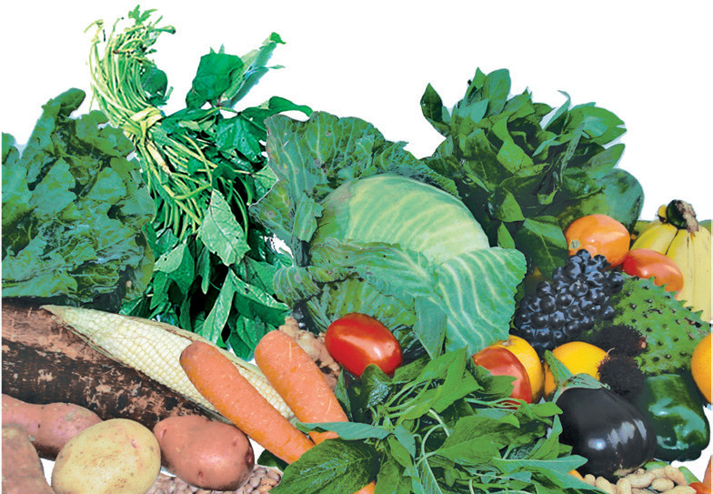

14
Student’s Book - Form Two

Biology for Secondary Schools
Roughage
This is dietary fibre that is obtained from the indigestible part of plants
(Figure 1.7). Roughage does not have any nutritional value as it is not digested and absorbed in the body. Sources of dietary fibre include cassava, potatoes, beans, fruits, cabbage, spinach, and whole grain cereals.
Functions of roughage
Roughage helps in the passage of food and faeces through the gut by aiding contraction and relaxation of the gut muscles (peristaltic movement). It also helps to control body weight, thus protects the body from diseases such as heart diseases.

Figure 1.7: Sources of roughage
Water
Water is an essential nutrient for the human body as it is a major constituent of body fluids such as blood, tears, and saliva. It forms a large part of the cell cytoplasm and helps to maintain the
shape of cells, tissues, and organs. Water helps in the process of breaking down food during digestion. It also lubricates moving parts of the body and prevents friction. Additionally, water helps in the regulation of body temperature.
Sweating is one of the means by which water prevents the human body from overheating during hot weather. This is because evaporation of sweat from the surface of the skin helps the body to cool during hot conditions. It is important to drink enough safe water, and eat raw vegetables and fruits to maintain an optimal water content in the body. A lacking of adequate water in the body leads to thirst, dehydration and constipation. Losing more than
10% of water in the body can lead to death.
Balanced diet
Task 1.3
Search for information from the library
and internet sources on concept of a balanced diet. Then, summarise your
findings.
A balanced diet refers to a meal containing foods from all food groups in the right proportions. A proper diet helps an individual to remain healthy.
For young individuals, a balanced diet helps them to grow and develop normally. It also help them to maintain


08/04/2026 10:18:11